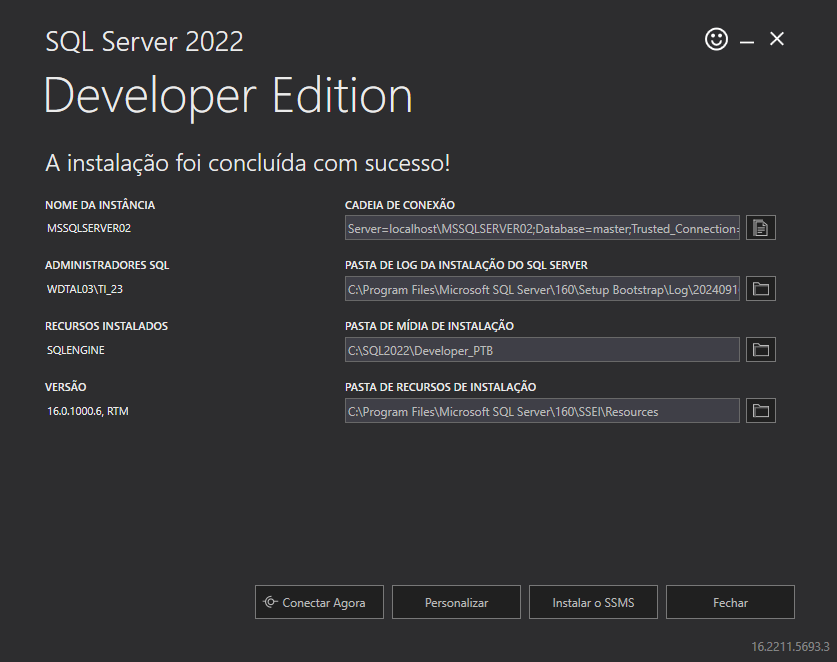

Passo 1: Download do SQL Server Developer
Acesse o site oficial da Microsoft e baixe a versão Developer do SQL Server.
Passo 2: Iniciar a Instalação
Após o download, execute o arquivo de instalação. Selecione a opção "Básico" para instalar somente os componentes necessários.
Passo 3: Idioma e Termos de Licença
Selecionar idioma: "Leia e aceita os termos de licença do software".
Passo 4: Local de instalação
Na etapa de local de Instalação, escolha "Especifique o local" para a instalação do SQL SERVER.
Passo 5: Finalizar a Instalação
Após seguir os passos vai ser realizado a instalação final. Isso pode levar alguns minutos. Ao final, clique em "Instalar SSMS". 
Passo 6: Download do SQL Server Management Studio (SSMS)
Agora, faça o download do SSMS para gerenciar o SQL Server visualmente.
Passo 7: Instalar o SSMS
Após o download, execute o instalador do SSMS. Siga as etapas padrão e clique em "Instalar" para completar a instalação.
Passo 8: Conectar ao SQL Server com o SSMS
Abra o SQL Server Management Studio, e na tela de login, insira os detalhes da instância SQL Server que você configurou. Use "Autenticação do Windows".
Passo 9: Pronto!
Agora você já pode gerenciar seu banco de dados SQL Server usando o SSMS.